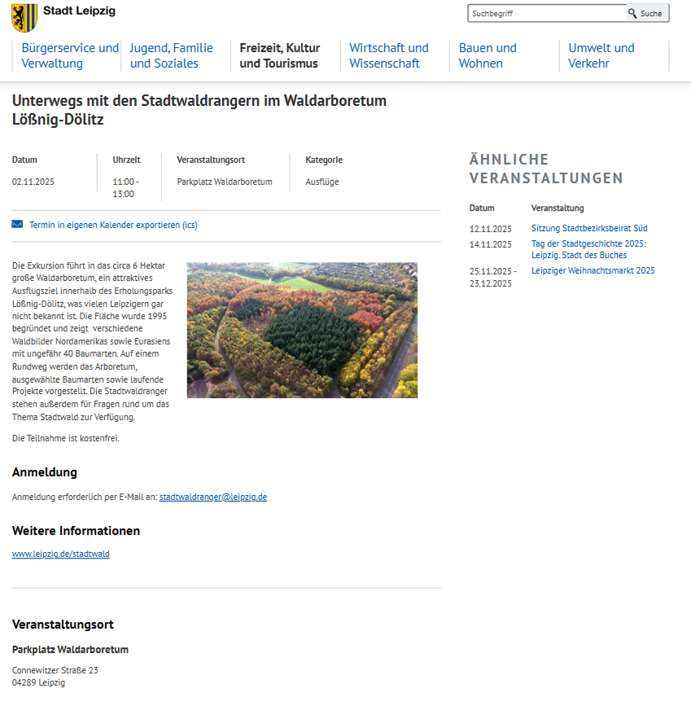
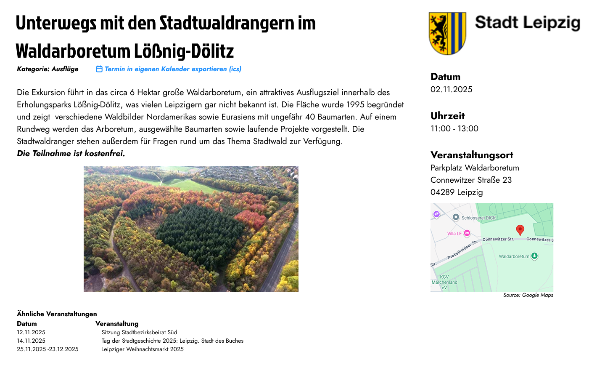
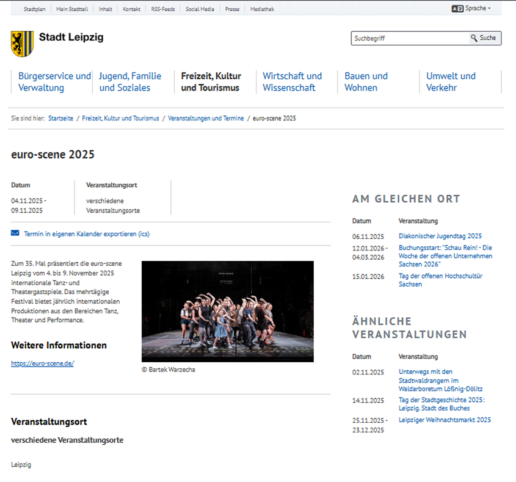
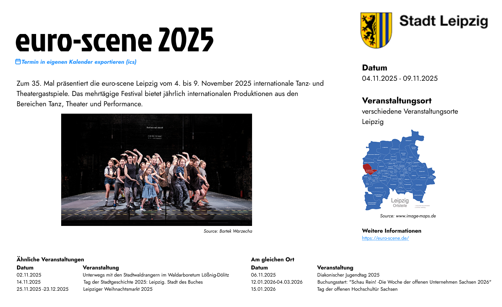
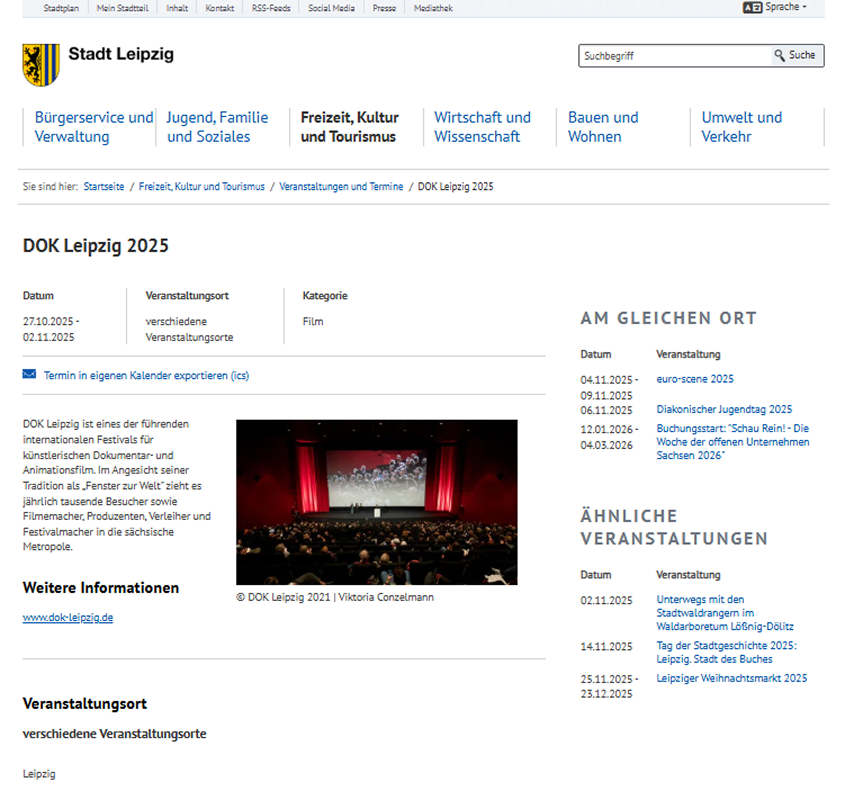
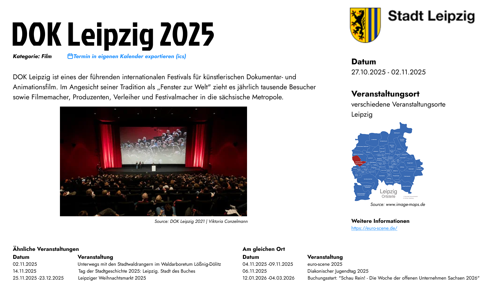

Figma Portofolio Redesign
Page 1

Page 1 Redesign

Page 2

Page 2 Redesign

Page 2

Page 2 Redesign

Design Rationale
- The events titles are in bold at the top making to make the purpose of the page clear and catch the
user's attention
- Important details, such as the date, time and locations are grouped on the right side in separate
column, making it easier to spot any important detail as the information is grouped by topic
- A consistent and clear layout is used to make it simple for the user to scan through the
information
- The information about similar events is grouped at the bottom of the page, without interfering with
other
details
- Frames were used to create each area of the new design page: title, content, side column, footer
-
The text tool was used to create a clear hierarchy (grouping information by importance) using
different font
sizes and weight
References:
Go back to the main page